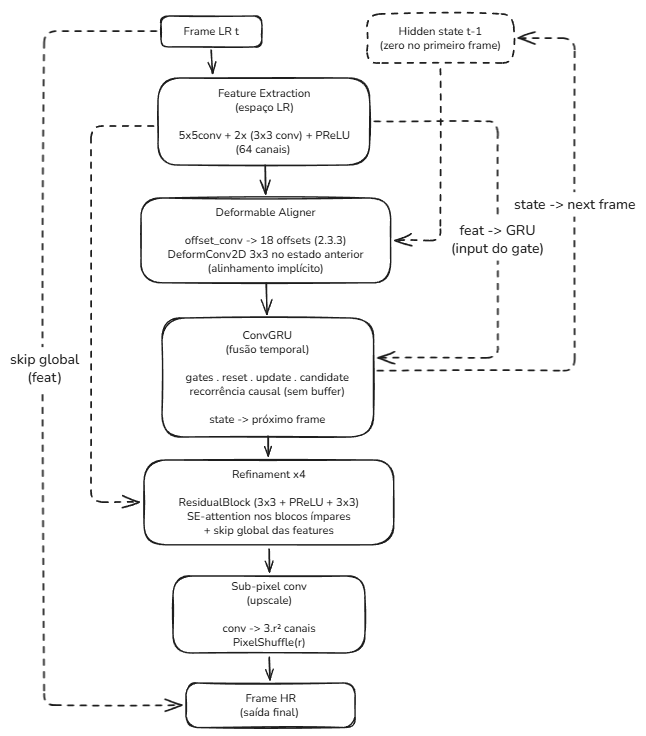
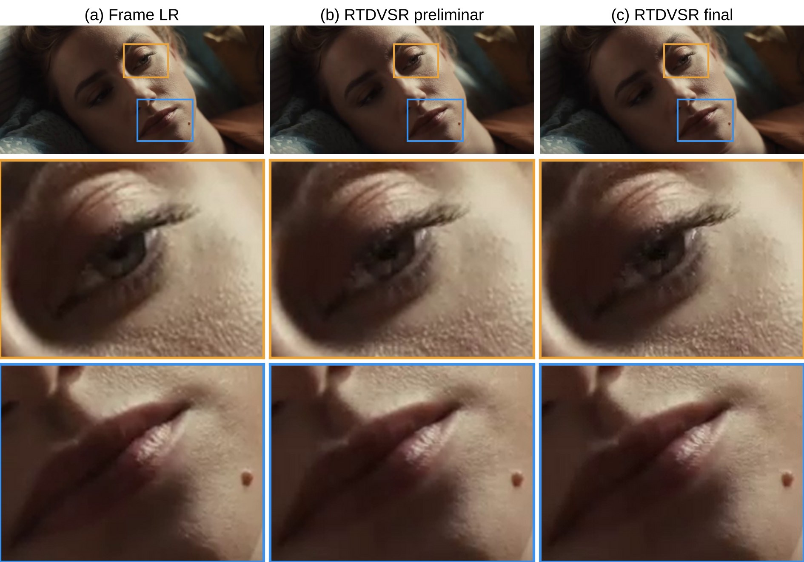
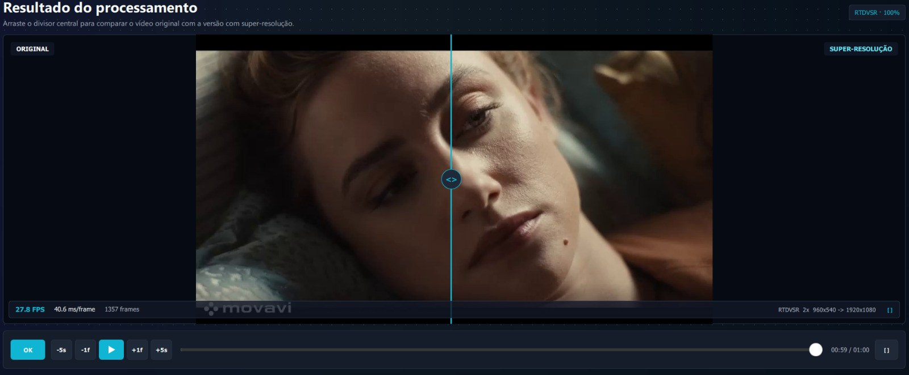

Redes neurais leves reconstruindo 1080p a partir de 540p, a 24 quadros por segundo, numa GPU de uso doméstico.
Telas Full HD, 4K e 8K elevam a demanda por vídeo de alta resolução, enquanto a transmissão continua limitada por largura de banda.
Todos são estritamente causais, extraem features no espaço LR e reconstroem por PixelShuffle com skip bicúbico. Só muda o alinhamento e a densidade do refinamento.
Cada quadro de baixa resolução é alinhado ao estado oculto do quadro anterior, sem buffer de quadros futuros.

Shuffle → RTDVSR: alinhamento e fusão recorrente rendem +1,06 dB e −15% de TCE, ao custo de ~3× a latência.
RTDVSR → Pyramid: três escalas dão só +0,17 dB, dentro da variação entre execuções, com +39% de latência.
RTX 3060 Ti (8 GB) · 960×540 → 1920×1080 · Vid4


Cílios, poros e o contorno dos lábios ficam mais nítidos no modelo final. No protótipo, o divisor central compara original e super-resolução ao vivo; em 1.357 quadros, a interface registrou picos de 27,8 FPS.
Super-resolução de vídeo em tempo real já cabe numa GPU doméstica.
Alinhamento implícito de baixo custo, fusão recorrente causal e uma boa implantação valem mais do que empilhar escalas.